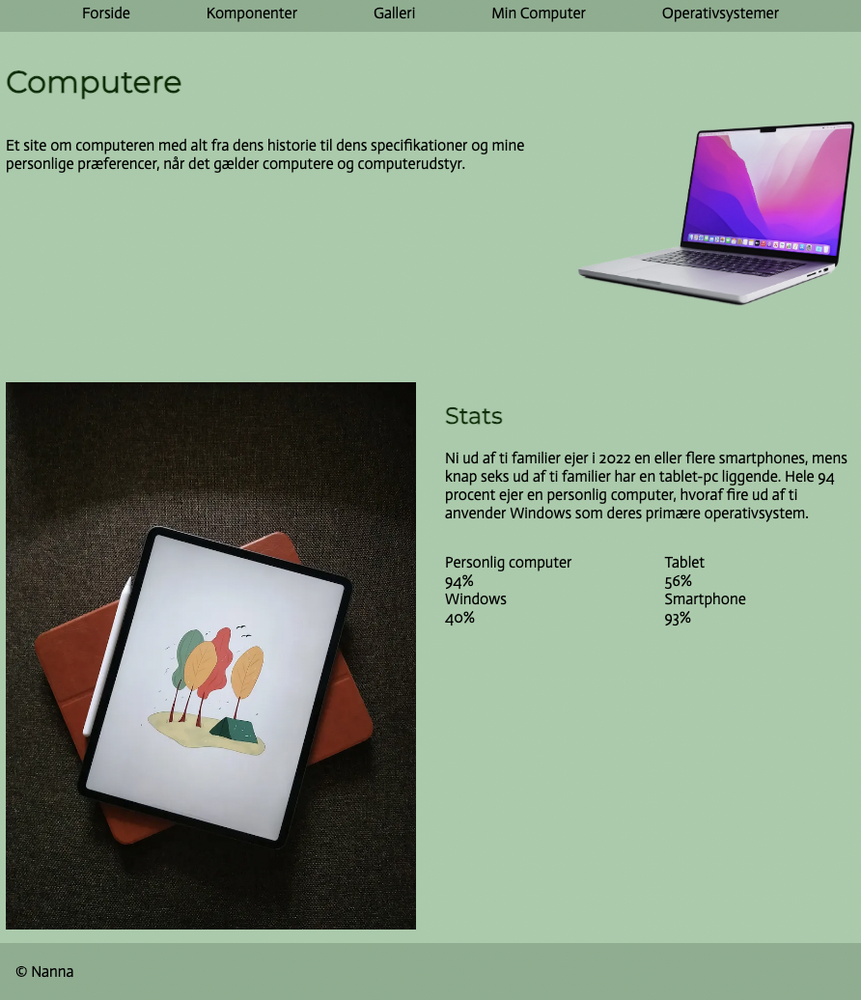

Portfolio
Her på siden kan du se et overblik over semesterets temaer og hvad de indeholder. Klik dig videre på pilene for at læse mere om hvert tema


Her på siden kan du se et overblik over semesterets temaer og hvad de indeholder. Klik dig videre på pilene for at læse mere om hvert tema